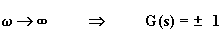
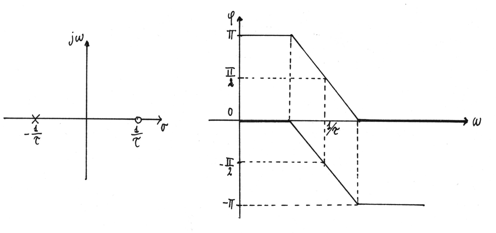

12. – FILTRO PASSA TUTTO (CIRCUITO SFASATORE)
Un filtro passa tutto lascia passare tutte le componenti di frequenza del segnale di ingresso senza attenuarle in ampiezza, mentre associa degli sfasamenti prestabiliti alle diverse frequenze del segnale di ingresso.
Quando i segnali vengono trasmessi su linee di trasmissione, ad esempio le linee telefoniche, subiscono dei cambiamenti di fase. Per compensare questi sfasamenti è necessario l'impiego di filtri passa tutto (o circuiti sfasatori), detti anche equalizzatori di ritardo o correttori di sfasamento.
La funzione di trasferimento di un tale circuito è del tipo: 
supponendo che abbia un polo reale negativo e uno zero non nell'origine, positivo e di valore uguale al polo.
Posto s = jw , al variare di w si deducono le seguenti relazioni:
per
per 
Una rete con funzione di trasferimento di questo tipo lascia passare sia le basse che le alte frequenze.
La fase risulta:
Con segno + la fase varia, al variare di w da zero all'infinito, tra 0° e -180°, e vale -90° per w = 1/t ; con segno – varia tra 180° e 0°, e vale +90° per w = 1/t .
In figura sono riportate le disposizioni del polo e dello zero e il grafico della fase (nei due casi ±1) in funzione della frequenza.

Nella seguente figura sono riportati due circuiti che realizzano due diversi sfasatori, uno con sfasamento positivo e l'altro negativo.
Circuito di figura a
per
per
per
Il circuito sfasa in anticipo il segnale di uscita rispetto al segnale di ingresso.
La curva caratteristica della fase può essere ritenuta rettilinea per valori di w compresi tra 0,1/t e 10/t .
Circuito di figura b
per
per
per
Il circuito sfasa in ritardo il segnale di uscita rispetto al segnale di ingresso.
La curva caratteristica della fase può essere ritenuta rettilinea per valori di w compresi tra 0,1/t e 10/t .
Qualora si voglia rendere variabile lo sfasamento è sufficiente rendere variabile la resistenza in serie alla capacità.